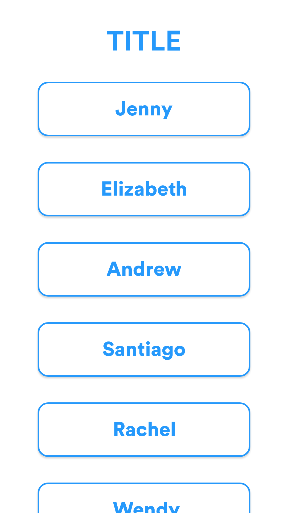
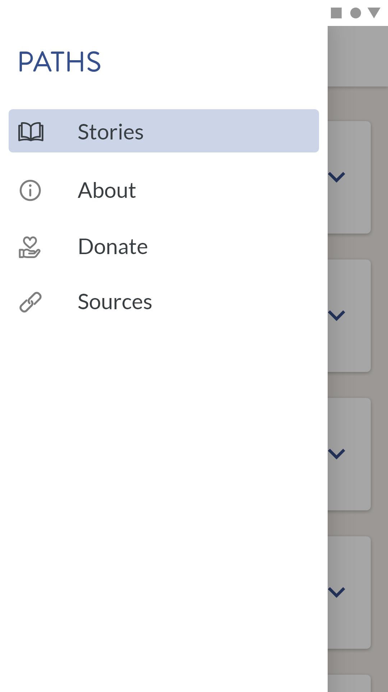
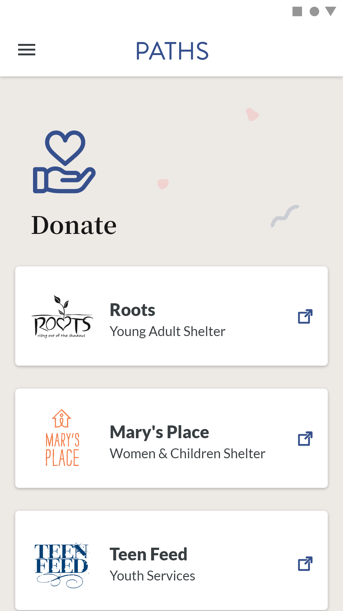
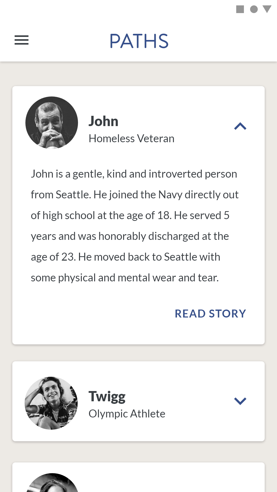
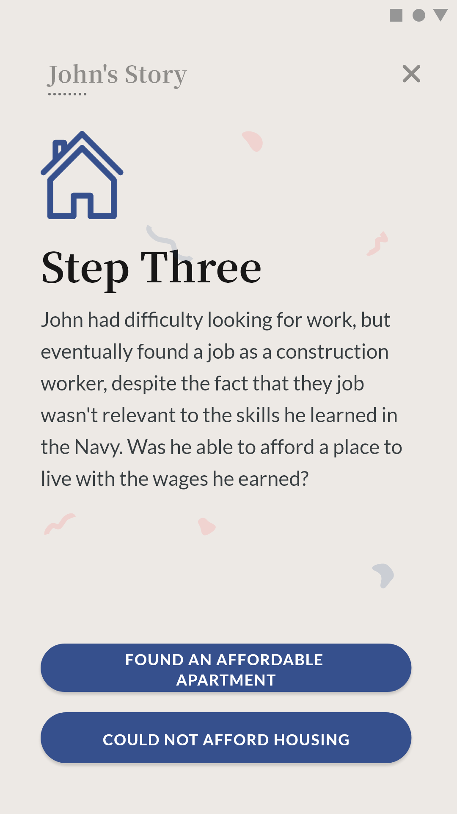

PATHS
Project Timeline
Jan - Jun 2019
My Role
User Research UI/UX Design Poster Design
Tools
Adobe XD Adobe Illustrator
Context
As part of the University of Washington's Informatics major, working on a capstone project is a requirement prior to graduation. For this, we have the option to seek out a sponsoring company if interested, and I was able to apply and receive an offer from Deloitte Digital. Working alongside Deloitte, my team of three others and I created an Android mobile application to help tackle common misconceptions and stereotypes regarding homelessness in Seattle. In the process, we conducted extensive user research and pivoted multiple times before settling on tackling this problem statement that we felt would best serve the homeless community at this point:
How do we address the common stereotypes surrounding the homeless community in Seattle and help create empathy for this population to encourage more people to donate and volunteer?Identifying the Problem
The original prompt given to us by Deloitte is as follows:
Design and develop a mobile application that crowdsources data from various sources to provide helpful information to the homeless public in Seattle.We took the prompt and decided to create an app that gathers information from various organizations in Seattle and organize it to provide homeless individuals with food and shelter availability. Ultimately, we wanted to help the homeless population make better informed decisions for which organizations to visit based on their location and needs. However, after meeting with our Capstone advisor, who has extensive experience in strategies for social impact, we believed our vision would not effectively address an information need of the homeless community. Through our own research and resources provided by our advisor, we realized that we were assuming the needs of users and that simply pointing folks to shelters and resources might not be the most helpful for these reasons:
- Homelessness is a complex and systematic issue, each individual case is widely different and difficult to address.
- Many homeless individuals don’t want to stay at shelters because of privacy, safety, dignity, and other personal concerns.
- Shelters sometimes have strict rules and sometimes may have a religious agenda, conflicting with someone’s beliefs.
- There are not enough “spots” in “shelters” to give every person experiencing homelessness a place to sleep.
- Shelters do not have the capacity to track bed availability.
Taking inspiration from our own lack of understanding regarding the relationship between homeless individuals and shelters, we decided to move in a different direction and considered:
How do we help the general public understand the difficulties of navigating homeless shelters from both homeless individuals' perspective, and staffs at shelter's perspective?Our team then went through hours of research to understand homeless shelters--their difficulties in people, finance, and the political system. Collectively, we agreed on building an app that would simulate what it's like to run a homeless shelter; portraying the lives of homeless individuals and volunteers/staffs managing shelters to illustrate the difficult decisions shelters have to make. After producing a MVP of the Shelter Simulator, we did validation testing to ensure our project is useful in helping the general public gain a better understanding of the homelessness problem in Seattle. Therefore, we reached out to David Hendry, a professor at the UW with substantial research experience regarding homeless youths, to ask for his feedback. The pivotal question he asked during our meeting was Why would I (or an average person in Seattle) want to run a homeless shelter? Starting and managing a homeless shelter is like running a business-- it's tough and not everyone is interested in becoming an entrepreneur. Therefore, our team decided to change the direction of our project again. We looked back at our problem statement and agreed that we ultimately want to help instill empathy in our community for the homeless population and address any stereotypes. Finally, we agreed on our last problem statement mentioned at the very beginning:
How do we address the common stereotypes surrounding the homeless community in Seattle and help create empathy for this population to encourage more people to donate and volunteer?Research
After clarifiyng the problem we wanted to tackle, we brainstormed and researched more on how to create empathy for our homeless population. In our research, we:
- talked to professors
- volunteered at organizations serving the homeless
- interviewed organizations serving the homeless
- read research papers and stories in the problem space
With these insights, we moved on to discuss exactly what we are producing and finalized our decision on creating an Android app for a collection of interactive stories, based on the real lives of homeless individuals and volunteers working in this field.
Features
With a clear direction, we came up with the following features to include in our app:
- Interactive storytelling to portray the lives of homeless individuals and volunteers in the homelessness context
- Real perspectives of homeless and volunteers' stories
- Relevant statistics embedded throughout to educate users on the homelessness problem
Initial Wireframes
|  Home Screen | Story View | End of Story Summary |
- Home Screen: List view of homeless individuals and volunteers' names. Tapping on a name takes the user to the respective individual's story.
- Story view: After user taps on a story, they are taken to this view and presented with a visual and the relevant story. The story is progressively disclosed and takes up 2 - 4 screens so users won't feel overwhelmed. The button at the bottom of the page indicates the action taken by the subject of the story. Tapping on this takes the user to the next part of the story to see what happens after the subject took the action.
- End of Story Summary: After navigating through a series of story view screens to read a story, the user is presented with a summary screen that details the subject's final decision as well as a list of key decisions made by the subject. At the bottom of the page are two CTAs: one being to view the source of the story, and the second being a navigation CTA to take the user to another story.
Identifying Problems & Improving
Taking my initial sketches to our stakeholders I received various helpful responses that I overlooked. The primary concerns I received includes:
-
Lack of Context:
The design does not include any introduction of what the app is about, making the home screen of a list of names confusing. There is also no background on a story; users jump directly into a story without knowing what to expect. -
Lack of Interaction:
The story layout is like that of a digital magazine: it includes pictures and text, and a button for each section of the story that highlights a decision made by the subject of the story; however, it is ultimately a navigation control that serves to take the user to the next part of the story. The lack of interactive elements make the user experience dull and uninviting.
Taking these concerns into consideration, I made the following changes:
| Onboarding | Home Screen | Story View | Debrief of a Choice | End of Story Summary |
- Onboarding: When a user first downloads the app, he/she is taken through an onboarding process that provides context through a brief explanation of the homeless problem and an introduction of the app.
- Home Screen: List view updated to provide more context regarding each story. Each card item includes the name of the subject of the story as well as a brief tag describing the subject.
- Story View: Tapping on a card in the home screen navigates the user to the corresponding story. Each story is split into smaller chunks on different screens, with each screen including a photograph and the story content. At the bottom of the screen are buttons that asks the user to choose what they think the subject of the story did next.
- Debrief of a Choice: Tapping on a wrong choice (one that's different from what the subject of the story actually did), the user will be presented with a modal where the relevant statistic(s) is detailed for educational purposes. The modal will also clearly express that was not the action taken by the subject, then asks the user to try a different choice to learn what the subject actually chose to do.
- End of Story Summary: After navigating through a series of story view screens to read a story, the user is presented with a summary screen that details the subject's final decision as well as a list of key decisions made by the subject in a horizontal scroll view. At the bottom of the page are two CTAs: one being to view the source of the story, and the second being a navigation CTA to take the user to another story.
Taking the updated design to our stakeholders, I received the following feedback:
-
Background of Subjects:
Though a tagline is included for each subject of a story, it still lacks an introduction to who the subject is. This makes the subject feel distant and abstract. -
Color Choices:
Too much red used; makes the environment feel unwelcoming and dangerous. -
Stock Photography:
Stock photography makes the story abstract and unpersonal. The photo composition doesn't feel "real".
Design Language
The lack of a style guide for our app made it difficult to move forward from the feedback received regarding color and visuals. Therefore, I paused on designing the UI of the app and focused on developing a style guide for the branding of our product that was to be used throughout (landing page, poster, app).
High Fidelity Mockups
After creating a style guide, I revisited the feedback received for the second iteration of the app design and made the following changes. Overall, the visual design was changed to align with the typography and color palette defined in the style guide. To address the feedback received, I made the cards on the home screen expandable. Upon tapping on the chevron of a card, it expands into a short biography about the subject of the story. The end of summary screen was also changed; the horizontal scroll view of "Key Decisions" was replaced with a timeline layout. This allows the user to review the key decisions in a more convenient way than having to scroll horizontally. I also replaced the visuals in the app, removing the stock photography and instead, using outlined icons throughout. This presents a more approchable tone to the homelessness context.
| Onboarding |  Home Screen |  Home Screen - Expand |
| Story View |  Debrief of a Choice |  End of Story Summary |
Final App Design
This project is still ongoing, and designs are still being improved based on usability testing.
What I Learned
- The value of testing: Through validation testing with individuals and organizations that are professionals in the homeless problem space, our team gained pivotal insights and feedback that aligned our final project in the right direction. Without reaching out for feedback, we would've been stuck on the first idea where we were wrongly assuming the needs of our users.
- Be open to critique and change: It's difficult when stakeholders shoot down your ideas and/or designs, making it seem as if all your efforts are ignored. However, all stakeholders work together to see the success of the final product. To be open to critique, it's helpful to see these stakeholders as members of your team rather than an authoritative power. By keeping an open mind and not getting attached to an idea, our team was able to design and develop a product significantly better for creating empathy in the homelessness problem space.
- The importance of defining a brand: In the wireframing stage, the low-fidelity wireframes were done without attention to color and typography. However, it was difficult to transform these into higher fidelity where visual design became a stronger focus. I struggled on choosing the right colors, fonts, and visuals to make the design as inviting as possible. There is just so many options and combinations of visual hierarchy possible that it was difficult to settle on anything. After developing a design language and a corresponding style guide, it made the whole process of designing the app, poster, and landing page of the project easier. Additionally, by defining a brand, it ensured for consistency between the products.
View app poster design and landing page